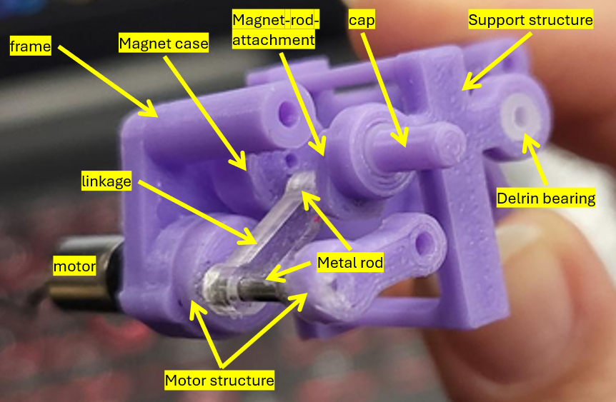
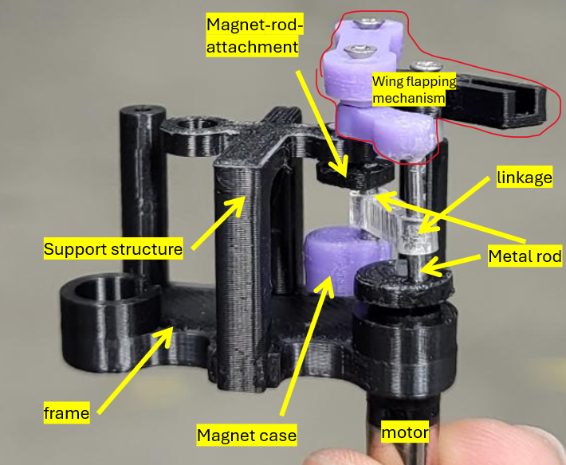

Flapping Wing Micro Air Vehicle
Overview
The Flapping-Wing Micro Air Vehicle (FWMAV) project was a continuation of a previous student's master's thesis, focusing on the development of a mechanism to transmit rotational motion from the wing-driving motors to magnetic rotary encoders positioned at the center of the robot's body. The primary objective was to investigate the feasibility of a mechanical linkage system as an alternative to an existing friction-based transmission mechanism. As the project is open-source, an additional objective was to develop a low-cost, reproducible design using accessible fabrication methods, primarily 3D printing and laser cutting.
The proposed proposed linkage design uses a single link, connecting 2 points that are radially equidistant from their respective axis of rotation. Theoretically, this configuration would allow for the rotational motion of the motor to be transmitted to a magnet positioned on top of the encoder. Compared with the alternative friction-based mechanism, which used two silicone cylinders in rolling contact, the acrylic linkage arm would be relatively lighter. The project aimed todetermine whether the linkage mechanism could effectively transmit the motion within the spatial and fabrication constraints.

An Early Conceptual Sketch and Design
This sketch shows an early concept for the mechanism. An idea for the linkage used a snap-fit connection, similar to a LEGO hand, to allow for easier assembly and disassembly. The link was fabricated in different ways, such as being laser cut fro acrylic and wood, and 3D printed.
A 3D printed support piece attatched to the center of the main frame holds structures connected to the magnets that spins on top of the encoders (the red region). These structures consists of a 3D printed material and a metal rod. The structures on the left and right-most sides of the main structure attatch to the motor. These structures are similarly made of 3D printed material and metal rods. The linkage arm then connects these structures, one pair on the right and left, via the metal rods.
Graveyard of 3D Printed Components
Pictured below are various design iterations of the frame, support structures, magnet holders, motor attachments, and other components developed throughout the prototyping process. One of the most common challenges encountered was material failure due to repeated mechanical stresses during assembly and disassembly.
For example, the linkage arm was initially designed with a snap-fit connection to the metal rods, but both laser-cut wood and 3D-printed components proved unable to withstand repeated attachment and removal without fracturing. Similarly, the central support structure experienced failures due to stresses introduced during assembly. Initially this structure had two prongs that were intserted into slots in the main frame, using a friction fit to hold in place. However, this design was unable to withstand repeated assembly without snapping.


One Iteration of Mechanism
This iteration addressed the linkage arm's previous failure issues by replacing the snap-fit connection with a design that allowed the arm to slide fully onto the metal rods. The central support structure was also reinforced by incorporating attachment points at both the top and bottom of the main frame, rather than only at the top, improving its stability.
However, a limitation remained in the magnet-rod attachment. This component utilized a 3D-printed extrusion as a rotating pin within a Delrin bearing, with a retaining cap to prevent the assembly from slipping out. Due to the dimensional tolerances and surface finish limitations of 3D printing, the pin could not rotate smoothly within the bearing. The resulting friction stresses eventually caused the pin to fracture, highlighting the limitations of using 3D-printed components for small, precision rotating components.

Second Iteration of Linkage Mechanism
A subsequent iteration improved the central support structure by introducing a clamp-style design that attached to the top and bottom of the main frame, replacing the previous slot-based connection. The redesigned support snapped into place without requiring excessive force during assembly, while also maintaining a more consistent vertical position within the frame. This addressed the alignment inconsistencies and assembly difficulties encountered with the previous design.
Additionally, the 3D-printed pin on the magnet-rod attachment was replaced with a metal screw, allowing for smoother rotation within the Delrin bearing while reducing the risk of fracture. The screw head also served as a built-in stopper, sitting flush against the bearing and eliminating the need for a separate retaining cap. These modifications improved the assembly process, component durability, and rotational performance of the mechanism.
Mechanism Demonstration
The wing-flapping linkage mechanism has been removed from the assembly in the video to provide a clearer view. Theoretically, the linkage was intended to transmit rotational motion from the motor assembly to the magnet assembly at a 1:1 angular velocity ratio. However, as shown in the video demo, the linkage instead behaves as a crank, failing to produce the intended synchronized rotation in both assemblies.
Concluding Statement
Although the linkage mechanism successfully achieved synchorized rotation in CAD, the physical prototype did not reproduce this behavior. This discrepancy suggests that fabrication tolerances, assembly alignment, and limitations in available fabrication equipment may have contributed to the design's failure. At the millimeter scale, small dimensional errors can significantly impact performance. These challenges do not necessarily indicate the mechanism is fundamentally flawed, but instead they highlight the difficulties in translating a theoretically sound design into a physical prototype using accessible methods and tools.
Future work would involve improving 3D printing and assembly precision, refining tolerances, and further investigating component alignment effects on the mechanism's performance. This testing would help determine whether the linkage mechanism could reliably achieve the desired motion under the project's constraints.